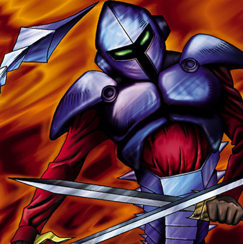

Armaill

STATS
ATK: 700
DEF: 1300DECK COST
Deck Cost per Card: 20Fusion List (50 Possible Fusions)
- Armaill + Abyss Flower = Bean Soldier
- Armaill + Ancient Jar = Minomushi Warrior
- Armaill + Armed Ninja = Charubin the Fire Knight
- Armaill + Axe Raider = Flame Swordsman
- Armaill + Baby Dragon = D. Human
- Armaill + Blackland Fire Dragon = Sword Arm of Dragon
- Armaill + Blue-Eyed Silver Zombie = Zombie Warrior
- Armaill + Candle of Fate = Charubin the Fire Knight
- Armaill + Celtic Guardian = Flame Swordsman
- Armaill + Charubin the Fire Knight = Flame Swordsman
- Armaill + Crawling Dragon #2 = Sword Arm of Dragon
- Armaill + Crawling Dragon = Sword Arm of Dragon
- Armaill + D. Human = Flame Swordsman
- Armaill + Dancing Elf = Celtic Guardian
- Armaill + Dark Plant = Bean Soldier
- Armaill + Darkfire Dragon = Flame Swordsman
- Armaill + Darkworld Thorns = Bean Soldier
- Armaill + Dragon Piper = Charubin the Fire Knight
- Armaill + Dragon Zombie = Sword Arm of Dragon
- Armaill + Droll Bird = Mavelus
- Armaill + Eyearmor = Charubin the Fire Knight
- Armaill + Fire Eye = Charubin the Fire Knight
- Armaill + Fire Reaper = Zombie Warrior
- Armaill + Fireyarou = Flame Swordsman
- Armaill + Flame Ghost = Zombie Warrior
- Armaill + Flame Snake = Charubin the Fire Knight
- Armaill + Fusionist = Flame Cerebrus
- Armaill + Graveyard and the Hand of Invitation = Zombie Warrior
- Armaill + Koumori Dragon = Sword Arm of Dragon
- Armaill + Kurama = Mavelus
- Armaill + Little Chimera = Flame Cerebrus
- Armaill + M-Warrior #2 = Charubin the Fire Knight
- Armaill + Man Eater = Bean Soldier
- Armaill + Masaki the Legendary Swordsman = Flame Swordsman
- Armaill + Masked Clown = Charubin the Fire Knight
- Armaill + Mavelus = Flame Swordsman
- Armaill + Mechanical Snail = Cyber Soldier
- Armaill + Milus Radiant = Flame Cerebrus
- Armaill + Muka Muka = Minomushi Warrior
- Armaill + Mushroom Man = Bean Soldier
- Armaill + Pot the Trick = Minomushi Warrior
- Armaill + Princess of Tsurugi = Charubin the Fire Knight
- Armaill + Rainbow Flower = Bean Soldier
- Armaill + Silver Fang = Flame Cerebrus
- Armaill + Skull Red Bird = Crimson Sunbird
- Armaill + Sleeping Lion = Flame Cerebrus
- Armaill + Snakeyashi = Bean Soldier
- Armaill + Swordsman from a Foreign Land = Charubin the Fire Knight
- Armaill + The Little Swordsman of Aile = Charubin the Fire Knight
- Armaill + Vishwar Randi = Charubin the Fire Knight